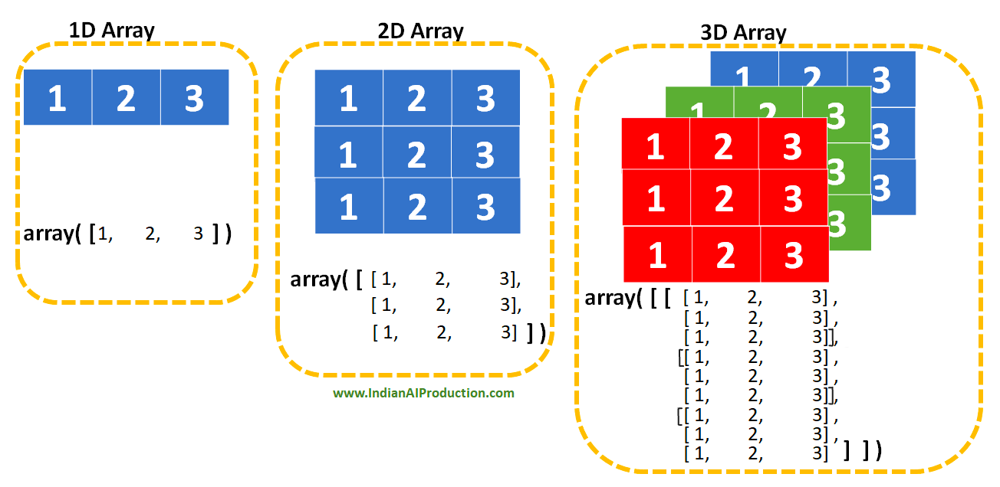
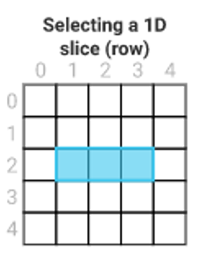
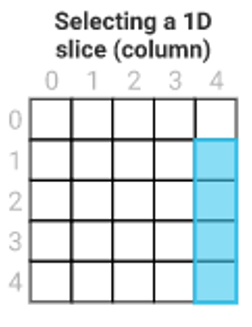
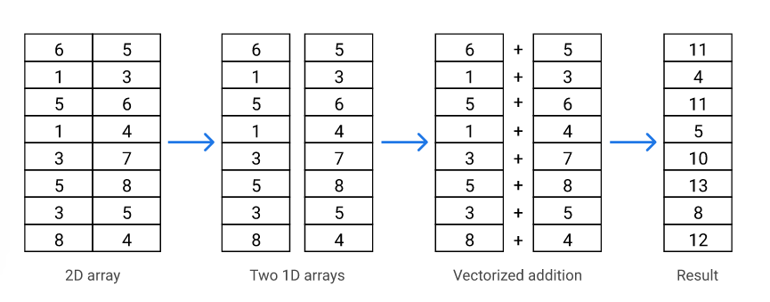
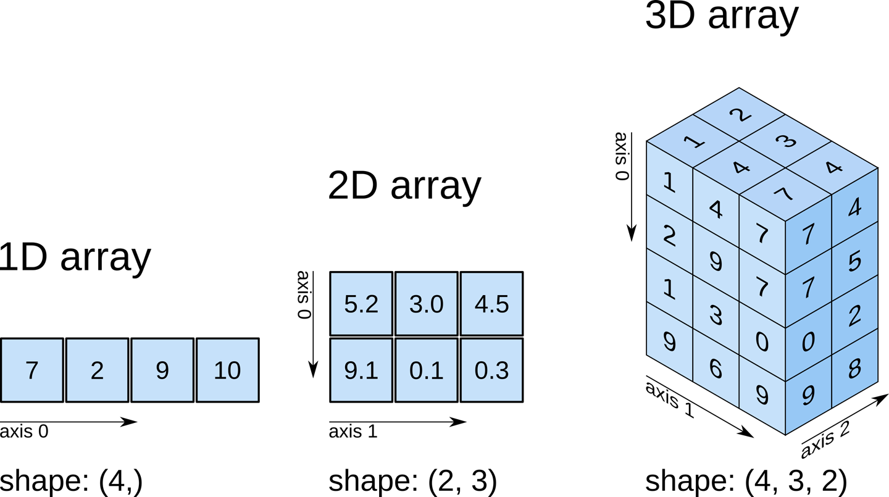
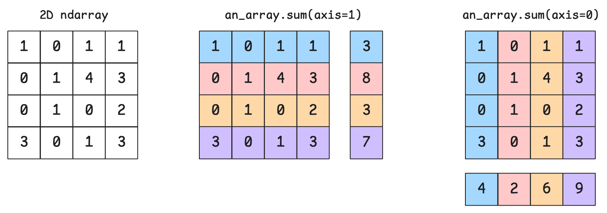
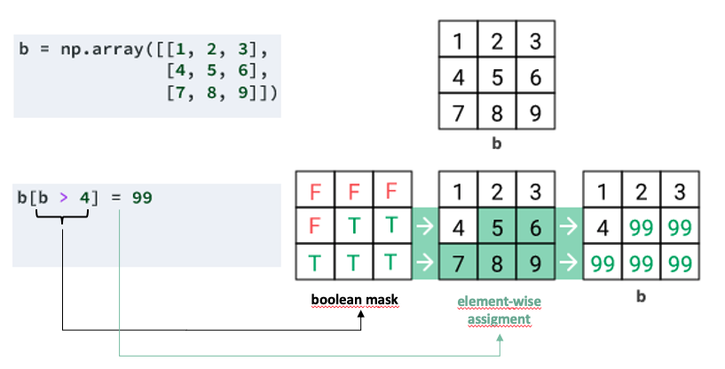
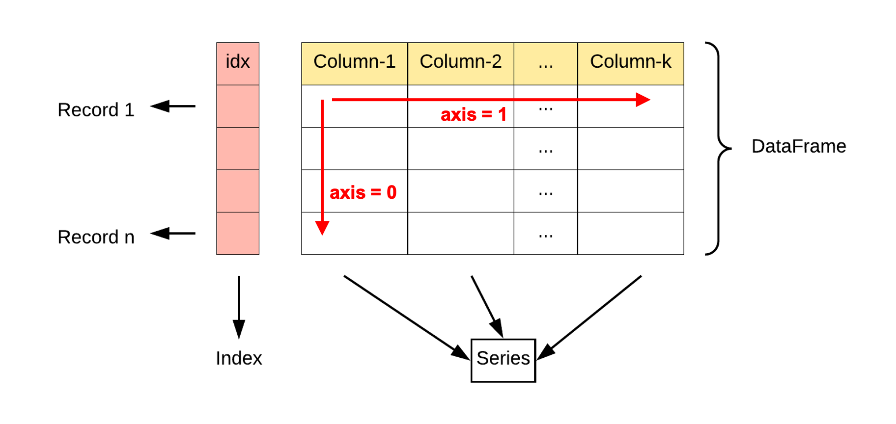
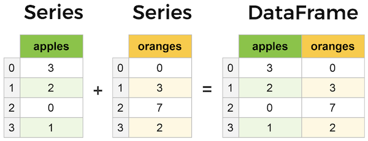

Data Analysis
Comprendre les outils fondamentaux de l'analyse de données en Python : Jupyter, NumPy et Pandas.
- Cheatsheet — Data Analysis (NumPy & Pandas)
- ️ Récapitulatif — Erreurs clés à éviter
- Plan du module
- 1) Jupyter
- 2) NumPy
- 3) Introduction à Pandas
- 4) Exploratory Data Analysis (EDA)
- 5) Boolean Indexing avec Pandas
- 6) Re-Indexing
- 7) Sorting
- 8) Grouping
- 9) Plotting
- 10) Testing dans les notebooks
- Bibliographie
- À toi de jouer ! 🚀
📋 Cheatsheet — Data Analysis (NumPy & Pandas)
import numpy as np
import pandas as pd
## ── NUMPY ────────────────────────────────────────────
arr = np.array([[1, 2, 3], [4, 5, 6]])
arr.shape # (2, 3) — dimensions du tableau
arr.ndim # 2 — nombre de dimensions
arr.dtype # int64 — type des éléments
## Slicing
arr[0, 1] # ligne 0, colonne 1 → 2
arr[1, :] # toute la ligne 1
arr[:, 0] # toute la colonne 0
arr[0, 1:3] # ligne 0, colonnes 1 à 2
## Opérations vectorisées (pas de boucle nécessaire)
arr * 2 # multiplie chaque élément par 2
arr + arr # addition élément par élément
np.sum(arr, axis=0) # somme par colonne (descend les lignes)
np.sum(arr, axis=1) # somme par ligne (parcourt les colonnes)
## Boolean indexing
arr[arr > 3] # array([4, 5, 6]) — éléments supérieurs à 3
## ── PANDAS — CRÉER ───────────────────────────────────
df = pd.read_csv("fichier.csv", decimal=",") # depuis un CSV
df = pd.DataFrame({"col_a": [1,2], "col_b": [3,4]}) # depuis un dict
## ── PANDAS — EXPLORER ────────────────────────────────
df.shape # (lignes, colonnes)
df.dtypes # types par colonne
df.info() # résumé complet (types + valeurs non-nulles)
df.describe() # stats descriptives (count, mean, std, min, max...)
df.head(5) # 5 premières lignes
df.tail(5) # 5 dernières lignes
df.isnull().sum() # nombre de valeurs manquantes par colonne
## ── PANDAS — SÉLECTION ───────────────────────────────
df["col"] # Series (1 colonne)
df[["col1", "col2"]] # DataFrame (n colonnes) — double crochets
df.loc[0:5, ["col1", "col2"]] # par label (index inclus)
df.iloc[0:5, 0:2] # par position entière (index exclu)
## ── PANDAS — BOOLEAN INDEXING ────────────────────────
df[df["Pop"] > 1_000_000] # condition simple
df[(df["Pop"] > 1_000_000) & (df["Region"] == "EU")] # ET → & (pas and)
df[~df["Region"].isin(["EU", "NA"])] # NOT → ~ (négation)
df[df["col"].str.contains("AMER")] # filtre texte
## ── PANDAS — NETTOYAGE ───────────────────────────────
df["col"] = df["col"].str.strip() # supprimer les espaces cachés
df.set_index("Country", inplace=True) # définir une colonne comme index
## ── PANDAS — TRIER ───────────────────────────────────
df.sort_index(ascending=False) # tri par index décroissant
df.sort_values(by="Pop", ascending=False) # tri par colonne
df.sort_values(by="GDP", na_position="first") # NaN en premier
## ── PANDAS — GROUPBY ─────────────────────────────────
g = df.groupby("Region") # grouper par colonne
g[["Pop", "Area"]].sum() # somme par groupe
g[["Pop"]].sum().sort_values("Pop", ascending=False) # trier les résultats
## ── PANDAS — PLOT ────────────────────────────────────
%matplotlib inline # affiche les graphes dans le notebook
df[["col"]].head(10).plot(kind="bar") # graphique en barres⚠️ Récapitulatif — Erreurs clés à éviter
Oublier l'import canonique de NumPy ou Pandas
array([1, 2, 3]) # ❌ NameError : np non importé
import numpy as np
np.array([1, 2, 3]) # ✅Confondre sélection d'une colonne (Series) et d'un DataFrame
df["Country"] # retourne une Series (1 crochet)
df[["Country"]] # retourne un DataFrame (double crochets)
## ❌ passer une Series à une fonction qui attend un DataFrameUtiliser l'opérateur and au lieu de & pour le Boolean Indexing
df[df["Pop"] > 1e9 and df["Region"] == "ASIA"] # ❌ ValueError
df[(df["Pop"] > 1e9) & (df["Region"] == "ASIA")] # ✅Oublier .str.strip() avant de filtrer sur des colonnes texte
df[df["Region"] == "WESTERN EUROPE"] # ❌ peut retourner 0 résultats (espaces cachés)
df["Region"] = df["Region"].str.strip()
df[df["Region"] == "WESTERN EUROPE"] # ✅Confondre axis=0 (colonnes) et axis=1 (lignes) dans NumPy/Pandas
df.sum(axis=0) # somme par colonne (résultat : une ligne)
df.sum(axis=1) # somme par ligne (résultat : une colonne)
## ✅ Moyen mnémotechnique : axis=0 → on "descend" les lignes → résultat par colonnePlan du module
- Data Analysis
- Data Sourcing
- Data Visualization
Contenu de cette session :
- Jupyter (10 min)
- NumPy (30 min)
- Pandas (50 min)
1) Jupyter
Jupyter est une application web open-source qui permet de créer et partager des documents contenant du code live, des équations, des visualisations et du texte narratif. Usages : nettoyage de données, simulation numérique, modélisation statistique, visualisation, machine learning, et bien plus.
Pour lancer Jupyter, ouvre ton Terminal :
cd ~/some/where
jupyter notebook2) NumPy
Package fondamental pour la manipulation de données haute performance avec Python.
Le concept clé introduit par NumPy est le tableau N-dimensionnel (ndarray).
Caractéristiques du ndarray :
- Multidimensionnel
- Données homogènes (un seul type)
- Taille fixe définie à la création

2.1 Import canonique
import numpy as np2.2 Créer un ndarray
my_list = [[1, 2, 3], [4, 5, 6]]
print(type(my_list))
my_list # list of lists## Output
<class 'list'>
[[1, 2, 3], [4, 5, 6]]my_array = np.array([[1, 2, 3], [4, 5, 6]])
print(type(my_array))
my_array # ndarray## Output
<class 'numpy.ndarray'>
array([[1, 2, 3],
[4, 5, 6]])2.3 Attributs clés d'un ndarray
print('my_array.ndim: ', my_array.ndim)
print('my_array.shape:', my_array.shape)
print('my_array.size: ', my_array.size)
print('my_array.dtype:', my_array.dtype)## Output
my_array.ndim: 2
my_array.shape: (2, 3)
my_array.size: 6
my_array.dtype: int642.4 Sélection de données 😎
## Construire un tableau 2D depuis une liste de listes
data_list = [
[ 0, 1, 2, 3, 4],
[10, 11, 12, 13, 14],
[20, 21, 22, 23, 24],
[30, 31, 32, 33, 34],
[40, 41, 42, 43, 44],
]
data_np = np.array(data_list)
data_np## Output
array([[ 0, 1, 2, 3, 4],
[10, 11, 12, 13, 14],
[20, 21, 22, 23, 24],
[30, 31, 32, 33, 34],
[40, 41, 42, 43, 44]])
## Pure Python
data_list[2][1:4]## Output
[21, 22, 23]## NumPy
data_np[2, 1:4] # data_np[ligne(s), colonne(s)]## Output
array([21, 22, 23])
## Pure Python
selection = []
for index, row in enumerate(data_list):
if index > 0:
selection.append(row[4])
selection # on aurait pu aussi utiliser une list comprehension## Output
[14, 24, 34, 44]## NumPy
data_np[1:, 4] # '1:' = de la ligne 1 jusqu'à la fin## Output
array([14, 24, 34, 44])2.5 Syntaxe générale du slicing
ndarray[start:stop:step]array = np.arange(0, 10)
array## Output
array([0, 1, 2, 3, 4, 5, 6, 7, 8, 9])array[1:7:2]## Output
array([1, 3, 5])2.6 Opérations vectorisées ⚡️
Calculer la somme ligne par ligne (8 additions) pour créer un vecteur 1D :
my_list = [
[6, 5],
[1, 3],
[5, 6],
[1, 4],
[3, 7],
[5, 8],
[3, 5],
[8, 4],
]## Python classique
sums = []
for row in my_list:
sums.append(row[0] + row[1]) # opérateur "+" standard
sumsLa façon NumPy :

my_array = np.array(my_list)
my_sum = my_array[:, 0] + my_array[:, 1] # opérateur "+" vectoriel
my_sum## Output
array([11, 4, 11, 5, 10, 13, 8, 12])2.7 Axes 🤯

Exemple 2D :
an_array.sum(axis=0) # équiv. à A[0,:] + A[1,:] + A[2,:] + ...
an_array.sum(axis=1) # équiv. à A[:,0] + A[:,1] + A[:,2] + ...
Les deux formes suivantes sont équivalentes :
an_array.sum(axis=0)
np.sum(an_array, axis=0)2.8 Comparaison de performance ⚡️
## Tableau 2D de forme (10 000, 10 000) avec des floats aléatoires — soit 100M de nombres !
my_array = np.random.rand(10000, 10000)
array_list = my_array.tolist()%%time
total = 0
for row in array_list:
for number in row:
total += number
round(total, 2)## Output
CPU times: user 3.84 s, sys: 146 ms, total: 3.99 s
Wall time: 4.01 s
50003977.92%%time
round(np.sum(my_array), 2)## Output
CPU times: user 26.7 ms, sys: 1.5 ms, total: 28.2 ms
Wall time: 27.4 ms
50003977.92NumPy est deux ordres de grandeur (100x) plus rapide que Python pur !
2.9 Boolean Indexing 🔥
Construire un masque booléen depuis un ndarray :

2.10 Limites de NumPy
- Pas de support pour les noms de colonnes
- Un seul type de données par ndarray
- Certaines méthodes utiles de traitement sont absentes
Pandas s'appuie sur NumPy pour résoudre ces problèmes.
3) Introduction à Pandas
Pandas est une bibliothèque open source offrant des structures de données et des outils d'analyse hautes performances, faciles à utiliser, pour Python.
3.1 Pandas Series
- Équivalent Pandas du tableau 1D de NumPy (mêmes méthodes disponibles)
- Possède un index supplémentaire
- Supporte plusieurs types de données
import pandas as pd # import canonique
my_series = pd.Series(data=[1, 2, 'three'], index=['id1', 'id2', 'id3'])
my_series = pd.Series({'id1': 1, 'id2': 2, 'id3': 'three'})
my_series## Output
id1 1
id2 2
id3 three
dtype: object3.2 Pandas DataFrames
- Équivalent Pandas d'un tableau 2D NumPy
- Labels sur les deux axes (lignes et colonnes)
- Supporte plusieurs types de données

import pandas as pd
df = pd.DataFrame(
[[4, 7, 10],
[5, 8, 11],
[6, 9, 12]],
index=['row_1', 'row_2', 'row_3'],
columns=['col_a', 'col_b', 'col_c']
)
df3.3 Un DataFrame est un dictionnaire de Series

apples = pd.Series(data=[1, 2, 3], index=['id1', 'id2', 'id3'])
oranges = pd.Series(data=[4, 5, 6], index=['id1', 'id2', 'id3'])
dict_of_series = {
'apples': apples,
'oranges': oranges,
}
pd.DataFrame(dict_of_series)4) Exploratory Data Analysis (EDA)
On va travailler sur ce dataset : 👉 Countries of the World.
Consulte-le dans ce Gist et télécharge-le avec :
curl -s -L https://wagon-public-datasets.s3.amazonaws.com/02-Data-Toolkit/01-Data-Analysis/countries.csv > countries.csv
head -n 3 countries.csvUn notebook commence typiquement ainsi :
import numpy as np
import pandas as pd4.1 Superpouvoirs du notebook
Dans une nouvelle cellule, utilise l'autocomplétion :
pd.read<TAB>
pd.read_csv<SHIFT+TAB> # jusqu'à 4 fois pour plus d'infosCharge le CSV dans un DataFrame countries_df :
file = 'countries.csv' # chemin relatif au notebook
countries_df = pd.read_csv(file, decimal=',')4.2 Explorer rapidement les données
Méthodes utiles à appeler sur un nouveau DataFrame :
countries_df.shape # Tuple représentant la dimensionnalité du DataFrame
countries_df.dtypes # types de chaque colonne
countries_df.info() # résumé complet
countries_df.describe() # stats descriptives
countries_df.isnull().sum() # valeurs manquantes par colonnecountries_df.head() # 5 premières lignes
countries_df.tail() # 5 dernières lignes4.3 Même logique que SQL !
👉 Pandas : comparaison avec SQL
Lire des colonnes — utilise la syntaxe [] :
countries_df['Country']
type(countries_df['Country']) # pandas.core.series.Seriescountries_df[['Country', 'Region']]
type(countries_df[['Country']]) # pandas.core.frame.DataFrameGroupe de lignes/colonnes :
countries_df.loc[0:5, ['Country', 'Region']] # de l'index 0 à 5 inclus👉 Thread Stackoverflow — loc vs brackets
5) Boolean Indexing avec Pandas
🤔 Quels pays ont plus d'un milliard d'habitants ?
Implémentation naïve en Python pur :
big_countries = []
for index, country in countries_df.iterrows():
if country['Population'] > 1_000_000_000:
big_countries.append(country)
pd.DataFrame(big_countries)Avec Pandas, c'est un one-liner grâce au Boolean Indexing :
countries_df[countries_df['Population'] > 1_000_000_000]🤔 Quels pays du continent américain ?
american = countries_df['Region'].str.contains('AMER')
countries_df[american]🤔 Quels pays d'Europe ?
countries_df[countries_df['Region'].isin(['WESTERN EUROPE', 'EASTERN EUROPE'])]Pas de résultats ? Il faut nettoyer d'abord :
countries_df['Region'].unique()
countries_df['Region'] = countries_df['Region'].str.strip()Pour la question inverse, utilise l'opérateur bit à bit ~ :
countries_df[~countries_df['Region'].isin(['WESTERN EUROPE', 'EASTERN EUROPE'])]6) Re-Indexing
countries_df['Country'] = countries_df['Country'].map(str.strip)
countries_df.set_index('Country', inplace=True)L'index n'est plus une séquence d'entiers, mais le nom des pays ! On peut alors faire :
## Obtenir la région et la population de France à Germany
countries_df.loc['France':'Germany', ['Region', 'Population']]7) Sorting
Tri par index :
countries_df.sort_index(ascending=False)Tri par colonnes :
countries_df.sort_values(by='Population', ascending=False)## Affiche les NaN en premier
countries_df.sort_values(by='GDP ($ per capita)', na_position='first')8) Grouping
Proche du GROUP BY SQL — processus en 3 étapes :
- Split : le DataFrame est divisé en groupes selon une clé
- Apply : une fonction d'agrégation (
sum,mean, etc.) est appliquée à chaque groupe - Combine : les résultats sont fusionnés en un nouveau DataFrame
🤔 Quelle région du monde est la plus peuplée ?
regions = countries_df.groupby('Region')regions[['Population', 'Area (sq. mi.)']].sum()regions[['Population', 'Area (sq. mi.)']].sum() \
.sort_values('Population', ascending=False)9) Plotting
%matplotlib inline
import matplotlibgdp = 'GDP ($ per capita)'
top_ten_countries_df = countries_df[[gdp]] \
.sort_values(gdp, ascending=False) \
.head(10)
top_ten_countries_dftop_ten_countries_df.plot(kind="bar")10) Testing dans les notebooks
Le testing en notebook fonctionne différemment des fichiers Python classiques.
💻 Regarde le premier challenge pour voir comment vérifier tes résultats directement dans le notebook !
Bibliographie
À toi de jouer ! 🚀
- 🧭 Introduction
- 1) Jupyter — Ton environnement de travail
- 2) NumPy — Tableaux rapides
- 3) Pandas — L'outil central de l'analyse de données
- 4) Analyse Exploratoire des Données (EDA)
- 5) Boolean Indexing avec Pandas
- 6) Re-indexing — Choisir son index
- 7) Tri des données
- 8) Groupement de données (GroupBy)
- 9) Visualisation rapide avec Pandas
- 🎯 Questions de vérification
- 📌 TL;DR
🧭 Introduction
L'analyse de données avec Python repose sur trois outils qui fonctionnent ensemble : Jupyter pour écrire et exécuter du code de façon interactive, NumPy pour manipuler des tableaux de chiffres très rapidement, et Pandas pour travailler avec des tableaux structurés (colonnes nommées, types mixtes) comme on le ferait avec Excel ou SQL — mais en code.
À retenir avant de commencer :
- Jupyter est un "carnet interactif" : tu écris du code dans des cellules, tu l'exécutes et tu vois le résultat immédiatement dessous.
- NumPy introduit le concept de tableau N-dimensionnel (
ndarray) : une grille de nombres, ultra-rapide car optimisée en C. - Pandas est bâti sur NumPy. Il ajoute les noms de colonnes, les index, et le support de plusieurs types à la fois.
- Le filtrage de données avec Pandas (Boolean Indexing) remplace des boucles entières par une seule ligne de code.
groupbydans Pandas est l'équivalent duGROUP BYde SQL : on regroupe, on agrège, on trie.
Analogie fil rouge : imagine un tableau Excel avec des données sur tous les pays du monde (population, superficie, PIB…). Jupyter est ton écran, NumPy est le moteur qui calcule vite, et Pandas est la surcouche qui te donne accès aux colonnes par nom, qui filtre en une ligne, qui groupe par région. C'est cet outil que tu vas utiliser à chaque session d'analyse.
Mini-plan de ce cours :
- Jupyter — l'environnement de travail
- NumPy — tableaux rapides et opérations vectorisées
- Pandas — Series, DataFrames, exploration, filtrage, tri, groupement, visualisation
1) Jupyter — Ton environnement de travail
Qu'est-ce que Jupyter ?
Jupyter est une application web qui tourne en local sur ton ordinateur. Elle te permet d'écrire du code Python dans des cellules, de l'exécuter, et de voir le résultat juste en dessous. Tu peux aussi écrire du texte, des équations, afficher des graphiques — tout dans le même document.
C'est l'outil standard dans le monde de la data science.
Jupyter s'appelle "notebook" (carnet) parce que c'est à la fois un espace de code ET un espace de notes. Tu peux raconter ton analyse au fil de l'eau.
Comment lancer Jupyter ?
Ouvre ton Terminal (macOS/Linux) ou PowerShell (Windows), navigue dans le dossier de ton projet, puis lance Jupyter :
cd ~/mes-projets/data-analysis # se placer dans le bon dossier
jupyter notebook # lance le serveur local, ouvre le navigateurUne page s'ouvre dans ton navigateur avec la liste de tes fichiers. Crée un nouveau notebook en cliquant sur "New > Python 3".
Les raccourcis clés utiles dans Jupyter :
- Shift+Entrée : exécuter la cellule et passer à la suivante
- TAB après avoir tapé quelques lettres : autocomplétion
- Shift+TAB après un nom de fonction : affiche la documentation
2) NumPy — Tableaux rapides
Qu'est-ce que NumPy ?
NumPy (Numerical Python) est la bibliothèque fondamentale pour le calcul scientifique en Python. Son apport principal : le ndarray (N-dimensional array), un tableau de nombres multidimensionnel, homogène, et ultra-rapide.
Trois caractéristiques clés du ndarray :
- Multidimensionnel : 1D (vecteur), 2D (matrice), 3D (cube), etc.
- Homogène : tous les éléments ont le même type (ex : tous des
int64) - Taille fixe : définie à la création, ne peut pas changer
2.1 Import canonique
La convention universelle est d'importer NumPy avec l'alias np :
import numpy as np # convention universelle — TOUJOURS utiliser cet aliasSi tu oublies cet import, Python ne reconnaîtra pas np.array(...) et tu auras une NameError. C'est l'erreur la plus fréquente des débutants.
2.2 Créer un ndarray
Voici la différence entre une liste Python classique et un tableau NumPy. On part des mêmes données :
# Une liste de listes Python classique
my_list = [[1, 2, 3], [4, 5, 6]]
print(type(my_list)) # <class 'list'>
my_list # [[1, 2, 3], [4, 5, 6]]# Conversion en tableau NumPy avec np.array()
my_array = np.array([[1, 2, 3], [4, 5, 6]]) # passer la liste à np.array()
print(type(my_array)) # <class 'numpy.ndarray'>
my_array
# array([[1, 2, 3],
# [4, 5, 6]])Visuellement, un tableau 2D NumPy ressemble à une grille : des lignes (axis 0) et des colonnes (axis 1). Retiens cette image, elle revient constamment.
2.3 Attributs clés
Un ndarray expose des attributs qui décrivent sa forme et son contenu :
my_array = np.array([[1, 2, 3], [4, 5, 6]])
print(my_array.ndim) # 2 — nombre de dimensions (2D = matrice)
print(my_array.shape) # (2, 3) — 2 lignes, 3 colonnes
print(my_array.size) # 6 — nombre total d'éléments (2 × 3)
print(my_array.dtype) # int64 — type des élémentsExemple numérique : notre tableau a shape = (2, 3). Cela signifie 2 lignes et 3 colonnes, donc $2 \times 3 = 6$ éléments au total (size = 6).
2.4 Sélection de données (Slicing)
Le slicing NumPy utilise la syntaxe [lignes, colonnes]. C'est beaucoup plus lisible que les boucles Python classiques.
Prenons ce tableau de référence :
data_np = np.array([
[ 0, 1, 2, 3, 4], # ligne 0
[10, 11, 12, 13, 14], # ligne 1
[20, 21, 22, 23, 24], # ligne 2
[30, 31, 32, 33, 34], # ligne 3
[40, 41, 42, 43, 44], # ligne 4
])Exemple 1 : sélectionner 3 éléments sur la ligne 2
# Python classique (verbeux)
data_list[2][1:4] # accède à la liste interne d'index 2, puis coupe
# → [21, 22, 23]
# NumPy (concis)
data_np[2, 1:4] # ligne 2, colonnes de l'index 1 à 3 (4 exclu)
# → array([21, 22, 23])Exemple 2 : sélectionner la dernière colonne, toutes lignes sauf la première
# Python classique (boucle nécessaire)
selection = []
for index, row in enumerate(data_list):
if index > 0:
selection.append(row[4])
# → [14, 24, 34, 44]
# NumPy (une ligne)
data_np[1:, 4] # lignes de 1 jusqu'à la fin (1: = "à partir de la ligne 1"), colonne 4
# → array([14, 24, 34, 44])Syntaxe générale du slicing :
ndarray[start:stop:step] # start inclus, stop exclu, step = pas
array = np.arange(0, 10) # crée [0, 1, 2, 3, 4, 5, 6, 7, 8, 9]
array[1:7:2] # de l'index 1 à 6 (7 exclu), de 2 en 2
# → array([1, 3, 5])La règle du stop exclu (stop non inclus) est identique aux listes Python et aux ranges. [1:7] donne les indices 1, 2, 3, 4, 5, 6.
2.5 Opérations vectorisées
C'est le super-pouvoir de NumPy : appliquer une opération sur tous les éléments à la fois, sans écrire de boucle.
my_list = [[6, 5], [1, 3], [5, 6], [1, 4], [3, 7], [5, 8], [3, 5], [8, 4]]
# Python classique : boucle explicite
sums = []
for row in my_list:
sums.append(row[0] + row[1]) # addition élément par élément
# → [11, 4, 11, 5, 10, 13, 8, 12]
# NumPy : opération vectorisée
my_array = np.array(my_list)
my_sum = my_array[:, 0] + my_array[:, 1] # addition colonne 0 + colonne 1, pour TOUTES les lignes
# → array([11, 4, 11, 5, 10, 13, 8, 12])Les deux donnent le même résultat, mais NumPy est 100x plus rapide sur de gros volumes de données.
Preuve de performance :
# Tableau 100 millions de nombres (10 000 × 10 000)
my_array = np.random.rand(10000, 10000)
array_list = my_array.tolist() # conversion en liste Python pour comparer
# Boucle Python classique
%%time
total = 0
for row in array_list:
for number in row:
total += number
# CPU times: ~4 secondes
# NumPy vectorisé
%%time
np.sum(my_array)
# CPU times: ~27 millisecondesNumPy est environ 150 fois plus rapide que Python pur sur cet exemple. Sur des millions de lignes de données réelles, la différence est décisive.
2.6 Les axes (axis)
La notion d'axe revient souvent dans NumPy et Pandas. Pour un tableau 2D :
axis=0: on descend le long des lignes (on "traverse" les lignes) → résultat par colonneaxis=1: on traverse les colonnes → résultat par ligne
# Exemple concret
an_array = np.array([[1, 2, 3],
[4, 5, 6]])
an_array.sum(axis=0) # additionne chaque colonne en descendant les lignes
# → array([5, 7, 9]) # 1+4=5, 2+5=7, 3+6=9
an_array.sum(axis=1) # additionne chaque ligne en traversant les colonnes
# → array([6, 15]) # 1+2+3=6, 4+5+6=15Formule mathématique : pour axis=0 on calcule $\sum_i A_{i,j}$ pour chaque colonne $j$. Pour axis=1 on calcule $\sum_j A_{i,j}$ pour chaque ligne $i$.
Moyen mnémotechnique : axis=0 "descend" les lignes (comme si tu regardais vers le bas). Le résultat est par colonne. axis=1 "traverse" les colonnes. Le résultat est par ligne.
2.7 Boolean Indexing
Le Boolean Indexing permet de filtrer un tableau en appliquant une condition logique. NumPy crée un masque booléen (un tableau de True/False) et ne retourne que les éléments où la valeur est True.
arr = np.array([[1, 2, 3], [4, 5, 6]])
masque = arr > 3 # crée un tableau booléen de même forme
# → array([[False, False, False],
# [ True, True, True]])
arr[arr > 3] # applique le masque, retourne un tableau 1D
# → array([4, 5, 6])2.8 Limites de NumPy
NumPy est puissant mais présente des limites pratiques :
- Pas de noms de colonnes : on accède aux données par position numérique uniquement
- Un seul type par tableau : impossible de mélanger des entiers et des textes
- Certaines opérations utiles (tri, groupement, jointure) sont absentes
C'est exactement pour résoudre ces limitations que Pandas a été créé. Pandas s'appuie sur NumPy tout en ajoutant une couche de confort pour l'analyse de données.
3) Pandas — L'outil central de l'analyse de données
Qu'est-ce que Pandas ?
Pandas est la bibliothèque Python de référence pour l'analyse de données tabulaires. Elle fournit deux structures principales : la Series (colonne) et le DataFrame (tableau 2D). Elle est bâtie sur NumPy et hérite de ses performances.
import pandas as pd # convention universelle — alias pd3.1 La Series — une colonne avec un index
Une Series est un tableau 1D avec un index (des étiquettes pour chaque ligne). Elle supporte plusieurs types de données.
import pandas as pd
# Créer une Series depuis une liste + index séparé
my_series = pd.Series(data=[1, 2, 'three'], index=['id1', 'id2', 'id3'])
# Ou plus simplement depuis un dictionnaire
my_series = pd.Series({'id1': 1, 'id2': 2, 'id3': 'three'})
my_series
# id1 1
# id2 2
# id3 three
# dtype: objectLa Series ressemble à la colonne d'un tableau Excel : chaque valeur a une étiquette de ligne (l'index). dtype: object signifie que les valeurs sont de types mixtes (ici int et str).
3.2 Le DataFrame — un tableau 2D avec étiquettes
Un DataFrame est un tableau 2D avec des noms de colonnes et un index de lignes. C'est l'objet central de Pandas.
df = pd.DataFrame(
[[4, 7, 10],
[5, 8, 11],
[6, 9, 12]],
index=['row_1', 'row_2', 'row_3'], # étiquettes des lignes
columns=['col_a', 'col_b', 'col_c'] # noms des colonnes
)Un DataFrame est en réalité un dictionnaire de Series. Chaque colonne est une Series, et le DataFrame les assemble :
apples = pd.Series(data=[1, 2, 3], index=['id1', 'id2', 'id3']) # colonne "apples"
oranges = pd.Series(data=[4, 5, 6], index=['id1', 'id2', 'id3']) # colonne "oranges"
# On passe un dictionnaire {nom_colonne: Series} à pd.DataFrame()
df_fruits = pd.DataFrame({'apples': apples, 'oranges': oranges})
# apples oranges
# id1 1 4
# id2 2 5
# id3 3 6Retiens : DataFrame = dictionnaire de Series. Chaque clé est un nom de colonne, chaque valeur est une Series (la colonne elle-même). Cette image mentale t'aidera à comprendre comment sélectionner et manipuler les données.
4) Analyse Exploratoire des Données (EDA)
L'EDA (Exploratory Data Analysis) est la première étape de tout projet data : charger les données, les observer, comprendre leur structure, repérer les anomalies.
On va travailler sur un vrai jeu de données : les pays du monde (population, superficie, PIB, région…).
4.1 Charger les données
D'abord, télécharge le fichier CSV depuis le terminal :
curl -s -L https://wagon-public-datasets.s3.amazonaws.com/02-Data-Toolkit/01-Data-Analysis/countries.csv > countries.csvPuis dans ton notebook Jupyter, commence toujours par les imports :
import numpy as np # importé en premier — convention
import pandas as pd # importé en second — conventionEnsuite, charge le CSV dans un DataFrame :
# pd.read_csv() lit un fichier CSV et le transforme en DataFrame
# decimal=',' indique que les décimales utilisent la virgule (format européen)
countries_df = pd.read_csv('countries.csv', decimal=',')Le paramètre decimal=',' est important pour les datasets européens. Sans lui, 1,5 serait lu comme du texte au lieu du nombre 1.5.
4.2 Explorer rapidement les données
Voici les méthodes essentielles à appeler sur tout nouveau DataFrame :
countries_df.shape # (246, 20) — 246 lignes, 20 colonnes
countries_df.dtypes # type de chaque colonne (int64, float64, object...)
countries_df.info() # résumé complet : types + nombre de valeurs non-nulles
countries_df.describe() # statistiques descriptives : mean, std, min, max, quartiles
countries_df.isnull().sum() # nombre de valeurs manquantes par colonne
countries_df.head() # 5 premières lignes (ou head(10) pour 10)
countries_df.tail() # 5 dernières lignesCommence toujours par .info() sur un nouveau dataset. Cela te donne en un coup d'oeil la taille, les types, et les valeurs manquantes — les trois premières questions de tout analyste.
4.3 Sélectionner des colonnes
Une colonne → Series (crochets simples) :
countries_df['Country'] # retourne une Series (tableau 1D)
type(countries_df['Country']) # pandas.core.series.SeriesPlusieurs colonnes → DataFrame (double crochets) :
countries_df[['Country', 'Region']] # retourne un DataFrame (tableau 2D)
type(countries_df[['Country']]) # pandas.core.frame.DataFrameC'est l'une des erreurs les plus fréquentes : df['col'] retourne une Series, df[['col']] retourne un DataFrame. La différence ? Un simple versus double crochets. Si une fonction attend un DataFrame et que tu lui passes une Series, tu auras une erreur.
Sélection par label avec .loc :
# .loc[lignes, colonnes] — les deux bornes sont INCLUSES
countries_df.loc[0:5, ['Country', 'Region']] # lignes 0 à 5 inclus, colonnes Country et RegionSélection par position avec .iloc :
# .iloc[lignes, colonnes] — syntaxe Python standard : borne droite EXCLUE
countries_df.iloc[0:5, 0:2] # lignes 0 à 4 (5 exclu), colonnes 0 et 1 (2 exclu).loc utilise les étiquettes (noms de colonnes, valeurs d'index) et inclut les deux bornes. .iloc utilise les positions entières (0, 1, 2…) comme Python standard avec borne droite exclue.
5) Boolean Indexing avec Pandas
Le Boolean Indexing est la façon idiomatique de filtrer des lignes dans Pandas. On crée une condition, Pandas produit un masque booléen, on l'applique au DataFrame.
Problème : filtrer sans Boolean Indexing (à ne pas faire)
Quels pays ont plus d'un milliard d'habitants ?
# Approche naïve : boucle explicite — verbose et lente
big_countries = []
for index, country in countries_df.iterrows(): # itération ligne par ligne
if country['Population'] > 1_000_000_000: # condition sur chaque ligne
big_countries.append(country)
pd.DataFrame(big_countries) # reconstruit un DataFrame depuis la listeSolution : Boolean Indexing (la bonne façon)
# Une seule ligne !
countries_df[countries_df['Population'] > 1_000_000_000]
# countries_df['Population'] > 1_000_000_000 → Series de True/False
# countries_df[...] → ne garde que les lignes TrueFiltrer sur du texte avec .str.contains()
Quels pays du continent américain ?
american = countries_df['Region'].str.contains('AMER') # True si 'AMER' est dans la chaîne
countries_df[american] # filtre le DataFrameFiltrer avec .isin() — plusieurs valeurs
Quels pays d'Europe ?
countries_df[countries_df['Region'].isin(['WESTERN EUROPE', 'EASTERN EUROPE'])]Si ça retourne 0 résultats, c'est probablement un problème d'espaces cachés dans les données :
countries_df['Region'].unique() # voir toutes les valeurs uniques
countries_df['Region'] = countries_df['Region'].str.strip() # supprimer les espaces en début/fin
countries_df[countries_df['Region'].isin(['WESTERN EUROPE', 'EASTERN EUROPE'])] # ça marche !Les espaces cachés sont un piège classique ! "WESTERN EUROPE" et " WESTERN EUROPE" sont différents pour Python. Toujours faire .str.strip() sur les colonnes texte avant de filtrer.
Combiner des conditions avec & (ET) et ~ (NOT)
# ET logique : utiliser & avec des parenthèses autour de chaque condition
countries_df[(countries_df['Population'] > 1e9) & (countries_df['Region'] == 'ASIA')]
# NOT logique : utiliser ~ (tilde) pour inverser
countries_df[~countries_df['Region'].isin(['WESTERN EUROPE', 'EASTERN EUROPE'])]
# retourne tous les pays QUI NE SONT PAS en EuropeN'utilise jamais and ou or Python avec le Boolean Indexing Pandas. Tu dois utiliser & (ET), | (OU), et ~ (NON). Et toujours mettre des parenthèses autour de chaque condition individuelle.
Pourquoi pas and ? Parce que and opère sur des valeurs scalaires (True/False uniques), alors que le Boolean Indexing produit une Series de True/False. L'opérateur & sait opérer élément par élément sur une Series.
6) Re-indexing — Choisir son index
Par défaut, l'index est une séquence d'entiers 0, 1, 2… On peut le remplacer par une colonne plus significative.
# D'abord, nettoyer les espaces dans la colonne Country
countries_df['Country'] = countries_df['Country'].map(str.strip) # strip sur toutes les valeurs
# Puis définir Country comme index
countries_df.set_index('Country', inplace=True) # inplace=True modifie le DataFrame en placeMaintenant l'index est le nom des pays. On peut utiliser .loc avec des noms :
# Sélectionner les lignes de France à Germany (ordre alphabétique)
# et uniquement les colonnes Region et Population
countries_df.loc['France':'Germany', ['Region', 'Population']]inplace=True modifie le DataFrame directement sans avoir besoin de faire countries_df = countries_df.set_index(...). C'est équivalent, juste plus court.
7) Tri des données
Tri par index
countries_df.sort_index(ascending=False) # tri alphabétique inverse (Z → A)
countries_df.sort_index(ascending=True) # tri alphabétique normal (A → Z) — par défautTri par valeur de colonne
countries_df.sort_values(by='Population', ascending=False) # tri par population décroissante
# Gestion des valeurs manquantes (NaN) : les mettre en premier
countries_df.sort_values(by='GDP ($ per capita)', na_position='first')Par défaut, Pandas place les NaN (valeurs manquantes) en dernier lors d'un tri. Utilise na_position='first' pour les voir en tête — utile pour repérer les données incomplètes.
8) Groupement de données (GroupBy)
Le groupby de Pandas fonctionne exactement comme le GROUP BY de SQL. Il suit un processus en 3 étapes :
- Split : le DataFrame est divisé en groupes selon une clé (ex : une colonne "Region")
- Apply : une fonction d'agrégation est appliquée à chaque groupe (
sum,mean,count…) - Combine : les résultats sont fusionnés en un nouveau DataFrame
Exemple : quelle région du monde est la plus peuplée ?
# Étape 1 — Split : grouper par région
regions = countries_df.groupby('Region') # crée un objet GroupBy (pas encore de calcul)
# Étape 2 & 3 — Apply + Combine : somme de Population et Area par région
regions[['Population', 'Area (sq. mi.)']].sum()
# retourne un DataFrame avec une ligne par région# Enchaîner avec un tri pour trouver la région la plus peuplée
regions[['Population', 'Area (sq. mi.)']].sum() \
.sort_values('Population', ascending=False) # \ permet de continuer sur la ligne suivanteLe \ en fin de ligne permet de continuer une expression Python sur la ligne suivante sans erreur de syntaxe. On l'utilise souvent pour chaîner des opérations Pandas lisiblement.
Équivalent SQL de cet exemple :
SELECT Region, SUM(Population), SUM(Area)
FROM countries
GROUP BY Region
ORDER BY SUM(Population) DESC;9) Visualisation rapide avec Pandas
Pandas intègre une interface de visualisation directe (basée sur Matplotlib) : tu peux tracer un graphique en une ligne.
%matplotlib inline # commande Jupyter : affiche les graphiques dans le notebook (pas de fenêtre externe)
import matplotlib # importe Matplotlib (nécessaire même si on l'utilise via Pandas)Exemple : les 10 pays avec le PIB par habitant le plus élevé
gdp = 'GDP ($ per capita)' # nom de la colonne (stocké dans une variable pour éviter les répétitions)
# Chaîne d'opérations :
top_ten_countries_df = countries_df[[gdp]] \ # sélectionner uniquement la colonne PIB
.sort_values(gdp, ascending=False) \ # trier par PIB décroissant
.head(10) # garder les 10 premiers
# Tracer un graphique en barres
top_ten_countries_df.plot(kind="bar").plot(kind="bar") est le point d'entrée le plus simple. D'autres valeurs : kind="line" (courbe), kind="hist" (histogramme), kind="scatter" (nuage de points). On approfondira la visualisation dans le module suivant.
🎯 Questions de vérification
Question 1 — NumPy :
Qu'est-ce que axis=0 signifie quand on fait my_array.sum(axis=0) sur un tableau 2D ? Quel est le résultat : une valeur par ligne ou une valeur par colonne ?
Question 2 — Pandas sélection :
Quelle est la différence entre df['Country'] et df[['Country']] ? Quel type retourne chacun ?
Question 3 — Boolean Indexing :
Pourquoi ce code provoque une erreur ?
df[df['Pop'] > 1e9 and df['Region'] == 'ASIA']Et comment le corriger ?
Question 4 — GroupBy :
Que fait ce code, étape par étape ?
countries_df.groupby('Region')[['Population']].sum().sort_values('Population', ascending=False)📌 TL;DR
- Jupyter est un notebook interactif : tu écris du code dans des cellules et tu vois le résultat immédiatement.
- NumPy introduit le
ndarray: un tableau multidimensionnel homogène, 100x plus rapide que les listes Python pour les calculs numériques. - Le slicing NumPy
arr[lignes, colonnes]remplace des boucles entières par une expression concise. axis=0opère en "descendant" les lignes (résultat par colonne) ;axis=1en "traversant" les colonnes (résultat par ligne).- Pandas ajoute noms de colonnes, index, et types mixtes au-dessus de NumPy. Le DataFrame est un dictionnaire de Series.
.info(),.describe(),.head(),.isnull().sum()sont les réflexes d'exploration à avoir sur tout nouveau dataset.- Le Boolean Indexing (
df[df['col'] > valeur]) filtre les lignes en une ligne de code, sans boucle. - Utilise
&(ET),|(OU),~(NON) — jamaisand/or— avec des parenthèses autour de chaque condition. .str.strip()est indispensable avant de filtrer sur du texte : les espaces cachés rendent les comparaisons fausses.groupby().sum().sort_values()est le pattern standard pour répondre à "quel groupe est le plus grand ?".
A. Concepts du cours
Le workflow EDA
L'Exploratory Data Analysis (Tukey, 1977) est la première étape de tout projet data. Avant de modéliser, avant de présenter, avant même de poser une hypothèse, vous devez comprendre la donnée que vous avez sous les yeux. L'EDA répond à six questions :
- Quelle est la shape ? Combien de lignes, combien de colonnes, quels types ?
- Y a-t-il des valeurs manquantes ? Combien ? Concentrées ou réparties ?
- Quelle est la distribution de chaque variable ? Normal, asymétrique, multimodal ?
- Y a-t-il des outliers ? Sont-ils des erreurs ou des phénomènes réels ?
- Quelles corrélations entre variables ?
- Y a-t-il des patterns temporels ou des sous-groupes ?
Workflow type sur un nouveau dataset :
import pandas as pd
import numpy as np
df = pd.read_csv("data.csv")
df.shape # (n_rows, n_cols)
df.head() # Visualiser les premières lignes
df.dtypes # Types de chaque colonne
df.info() # Aperçu types + nulls
df.describe() # Stats numériques
df.describe(include='object') # Stats catégorielles
df.isnull().sum() # Comptage des NaN par colonne
df.isnull().mean() # Pourcentage de NaN (entre 0 et 1)
df.nunique() # Cardinalité de chaque colonne
df.duplicated().sum() # Doublons exactsAnalogie : sauter l'EDA pour modéliser tout de suite, c'est comme partir en voyage sans regarder la carte. Vous arriverez peut-être à destination, mais vous aurez fait beaucoup de détours, et vous aurez raté toutes les surprises du chemin. Les data scientists juniors veulent toujours « commencer à coder le modèle » ; les seniors passent 60% de leur temps en EDA.
Statistiques descriptives
Pour chaque variable numérique, il faut connaître cinq nombres au minimum :
- min : valeur la plus basse
- q1 (25e percentile) : un quart des valeurs sont en dessous
- médiane (50e percentile) : la valeur centrale
- q3 (75e percentile) : trois quarts des valeurs en dessous
- max : valeur la plus haute
Plus la moyenne et l'écart-type. La moyenne et la médiane racontent des histoires différentes :
| Distribution | Moyenne vs Médiane |
|---|---|
| Symétrique (normale) | Égales |
| Asymétrique à droite (revenus) | Moyenne >> Médiane |
| Asymétrique à gauche (notes d'examen) | Moyenne << Médiane |
df["salary"].describe()
# count 1000
# mean 58000 ← gonflé par les hauts salaires
# std 45000
# min 18000
# 25% 32000
# 50% 45000 ← bien plus représentatif
# 75% 68000
# max 750000Question d'entretien classique : "Pour décrire le salaire d'un pays, faut-il citer la moyenne ou la médiane ?" Réponse : la médiane, parce que la distribution des revenus est très asymétrique à droite (quelques milliardaires faussent la moyenne). C'est exactement pourquoi l'INSEE publie le revenu médian pour les statistiques sociales. Si vous citez la moyenne, vous induisez en erreur.
groupby : split-apply-combine
Le pattern le plus puissant de Pandas, hérité directement de SQL :
- Split : on découpe le DataFrame en sous-groupes selon une ou plusieurs colonnes.
- Apply : on applique une fonction (agrégation, transformation, filtrage) à chaque groupe.
- Combine : on recolle les résultats en un seul DataFrame.
# Agrégation : moyenne de l'âge par ville
df.groupby("city")["age"].mean()
# city
# Berlin 32.5
# London 28.7
# Paris 31.2
# Plusieurs agrégations en une fois
df.groupby("city").agg(
avg_age=("age", "mean"),
max_salary=("salary", "max"),
n_users=("id", "count"),
)
# Group par plusieurs colonnes
df.groupby(["city", "department"])["salary"].sum()
# Transformation (préserve la shape originale)
df["salary_normalized"] = df.groupby("dept")["salary"].transform(
lambda x: (x - x.mean()) / x.std()
)Trois variantes selon ce que vous voulez :
| Méthode | Output | Cas d'usage |
|---|---|---|
agg() | Une ligne par groupe | Reporting, dashboard |
transform() | Même shape que l'input | Normalisation par groupe |
apply() | Flexible (peut tout renvoyer) | Quand agg/transform ne suffisent pas |
Pivot, stack, melt
Le passage entre format long (une ligne par observation) et format large (une ligne par entité, une colonne par variable) est crucial pour la viz et le ML.
# Long format
df_long = pd.DataFrame({
"year": [2020, 2020, 2021, 2021],
"city": ["Paris", "Lyon", "Paris", "Lyon"],
"sales": [100, 80, 120, 95],
})
# Pivot vers wide
df_wide = df_long.pivot(index="year", columns="city", values="sales")
# Lyon Paris
# 2020 80 100
# 2021 95 120
# Melt vers long (inverse du pivot)
df_long_again = df_wide.reset_index().melt(
id_vars="year", var_name="city", value_name="sales"
)pivot_table est une version plus puissante qui gère les agrégations et les doublons :
df.pivot_table(
index="dept",
columns="year",
values="salary",
aggfunc="mean",
fill_value=0,
)Bonne pratique : pour le ML et les visualisations avec seaborn, le format long (tidy data) est souvent plus pratique. Une colonne par variable, une ligne par observation. Cette discipline simplifie tout en aval.
B. Compléments avancés
Détecter les outliers proprement
Trois approches courantes, du plus simple au plus robuste :
Méthode 1 — IQR : un point est un outlier s'il est en dehors de $[Q_1 - 1.5 \cdot \text{IQR},\ Q_3 + 1.5 \cdot \text{IQR}]$ où $\text{IQR} = Q_3 - Q_1$.
Explication en français : l'IQR (interquartile range) représente l'étalement "central" des données. On considère qu'un point à plus de 1.5 IQR du Q1 ou Q3 est "inhabituellement loin".
Q1 = df["price"].quantile(0.25)
Q3 = df["price"].quantile(0.75)
IQR = Q3 - Q1
outliers = df[(df["price"] < Q1 - 1.5*IQR) | (df["price"] > Q3 + 1.5*IQR)]C'est la définition utilisée dans les boxplots. Avantage : non paramétrique. Inconvénient : ne tient pas compte de la forme de la distribution.
Méthode 2 — Z-score : un point est un outlier si $|z| > 3$ où $z = (x - \mu)/\sigma$.
Explication : le z-score mesure combien d'écarts-types un point est de la moyenne. Sous une loi normale, 99.7% des points sont dans $[\mu - 3\sigma, \mu + 3\sigma]$.
from scipy import stats
df["z"] = stats.zscore(df["price"])
outliers = df[df["z"].abs() > 3]Limitation : suppose une distribution normale. À éviter sur des distributions très asymétriques (revenus, prix de maisons).
Méthode 3 — Isolation Forest : modèle ML qui isole les points "anormaux" en moyenne avec moins de splits dans un arbre aléatoire.
from sklearn.ensemble import IsolationForest
iso = IsolationForest(contamination=0.05, random_state=42)
df["is_outlier"] = iso.fit_predict(df[["price", "rooms", "area"]]) == -1Robuste, multivarié, ne suppose aucune distribution.
Piège fondamental : avant de supprimer un outlier, demandez pourquoi il existe. Un salaire de 500k€ dans un dataset peut être : (1) une erreur de saisie (à corriger), (2) un cadre dirigeant légitime (à garder), ou (3) un cas rare qu'on veut justement étudier (à conserver et flagger). Supprimer aveuglément des outliers fait perdre du signal. La règle : investiguer d'abord, agir ensuite.
Corrélation, causalité, et leur écart
df.corr() calcule la matrice de corrélation de Pearson — une mesure linéaire entre -1 et 1. Trois pièges :
1. Corrélation ≠ causalité. Le nombre de noyés à la piscine et la consommation de glace sont fortement corrélés. La cause commune est : il fait chaud.
2. Pearson ne capture que le linéaire. $y = x^2$ a une corrélation Pearson nulle entre $-1$ et $+1$ malgré une relation parfaite. Pour des relations monotones non linéaires, utilisez Spearman :
df.corr(method='spearman') # Corrélation des rangs, capture les monotones3. Outliers peuvent inverser le signe. Un seul point extrême peut transformer une corrélation -0.8 en +0.5. Toujours regarder le scatter plot, jamais juste le coefficient.
import seaborn as sns
sns.heatmap(df.corr(), annot=True, cmap="coolwarm", center=0)Pour identifier rapidement les variables les plus corrélées avec une cible :
df.corr()["target"].abs().sort_values(ascending=False)Profiling automatique
Pour les premières minutes sur un nouveau dataset, des outils génèrent un rapport HTML complet en une ligne :
# ydata-profiling (ex-pandas-profiling)
from ydata_profiling import ProfileReport
ProfileReport(df, title="EDA").to_file("eda.html")
# Sweetviz
import sweetviz
sweetviz.analyze(df).show_html("eda.html")Vous obtenez : distributions, corrélations, missing values, top valeurs, alertes (skew, cardinalité élevée, doublons), et même des recommandations.
Important : c'est un point de départ, pas un point d'arrivée. Lisez le rapport, identifiez les questions à creuser, puis explorez manuellement.
C. Questions de compréhension
Q1 : Quelle est la différence entre df.groupby('city').sum() et df.groupby('city')['amount'].sum() ?
💡 Voir l'indice
Ce qui est sommé.
✅ Voir la réponse
df.groupby('city').sum()somme toutes les colonnes numériques, ce qui peut produire des sommes absurdes (sommer des âges, des prix et des notes en même temps).df.groupby('city')['amount'].sum()ne somme que la colonneamount, ce qui est presque toujours ce que vous voulez.
En pratique, depuis Pandas 2.0, groupby().sum() ignore automatiquement les colonnes non-numériques (avant, ça plantait sur les strings), mais reste casse-figure car vous obtenez des résultats sur des colonnes auxquelles vous n'aviez pas pensé.
Toujours sélectionner explicitement la ou les colonnes à agréger :
df.groupby('city')[['amount', 'qty']].sum()C'est plus rapide aussi (Pandas ne calcule que ce qu'on demande).
Q2 : Vous voulez calculer le percentile 90 par groupe. Comment écrire df.groupby('city')['salary'].agg(...) ?
💡 Voir l'indice
Lambda ou fonction nommée.
✅ Voir la réponse
# Option 1 : lambda
df.groupby('city')['salary'].agg(lambda x: x.quantile(0.9))
# Option 2 : méthode native (plus rapide et plus lisible)
df.groupby('city')['salary'].quantile(0.9)Pour plusieurs percentiles :
df.groupby('city')['salary'].quantile([0.5, 0.9, 0.99]).unstack()Les méthodes natives (mean, quantile, nlargest, etc.) sont toujours plus rapides qu'un lambda parce qu'elles tournent en code Cython.
Le lambda est nécessaire seulement pour des calculs custom comme :
# Proportion au-dessus d'un seuil
df.groupby('city')['salary'].agg(lambda x: (x > 100_000).sum() / len(x))Question d'entretien Pandas : "Comment calculer le 95e percentile par catégorie en évitant un lambda ?" — la réponse quantile(0.95) montre que vous connaissez l'API.
Q3 : Vous calculez df.corr() et la matrice est pleine de NaN. Pourquoi, et comment réparer ?
💡 Voir l'indice
Missing values.
✅ Voir la réponse
df.corr() ignore les paires de lignes contenant des NaN dans l'une ou l'autre colonne (méthode "pairwise"). Si les NaN sont nombreux ou répartis aléatoirement, la corrélation calculée se fait sur un sous-échantillon réduit, ce qui peut donner des NaN si le sous-échantillon est trop petit ou totalement vide.
Solutions :
- Imputer les NaN avant
corr():
df_filled = df.fillna(df.median())
df_filled.corr()- Filtrer les colonnes ayant trop de NaN :
df_clean = df.dropna(axis=1, thresh=0.9 * len(df))
# Garde seulement les colonnes avec au moins 90% de valeurs non-NaN- Utiliser
min_periodsqui force un nombre minimum d'observations :
df.corr(min_periods=100)
# NaN si moins de 100 observations non-NaN dans la paireL'approche correcte dépend du diagnostic : si les NaN sont systématiques, ne calculez pas de corrélation sur ces colonnes. Le pire serait d'imputer aveuglément avec la moyenne et de prétendre que la corrélation est valide.
Ressources additionnelles
- Python for Data Analysis (Wes McKinney) — chapitres 9-11 sur l'EDA
- Tidy Data (Hadley Wickham) — papier fondateur sur les formats long/wide
- Pandas tips and tricks — recettes officielles
- Kaggle Learn — Data Cleaning — cours interactif
- Storytelling with Data (Cole Nussbaumer Knaflic) — pour passer de l'EDA à la communication